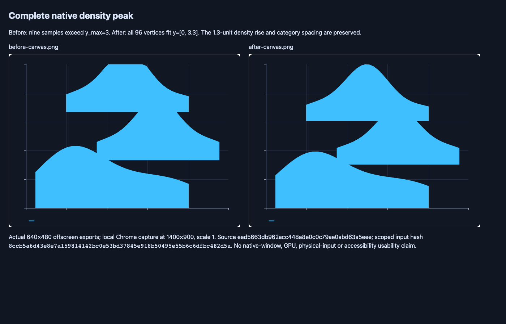
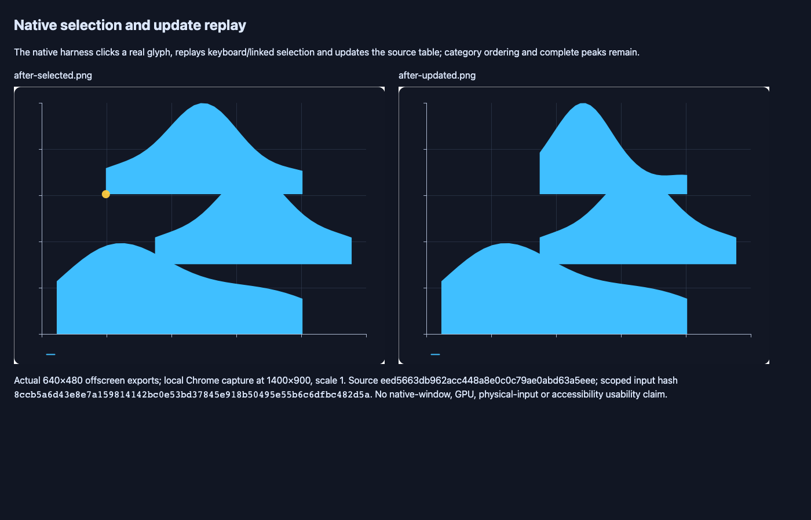
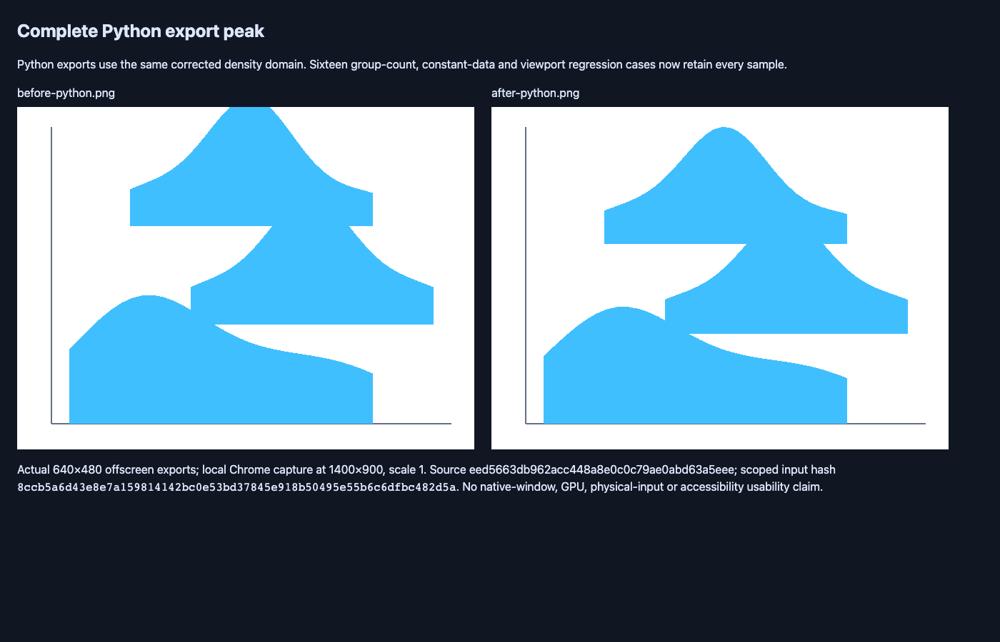
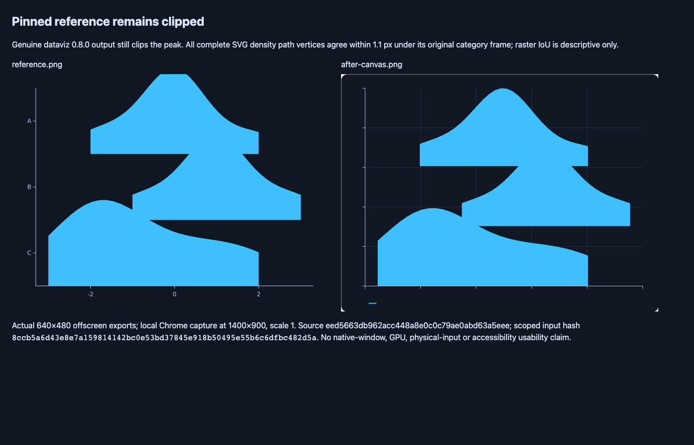
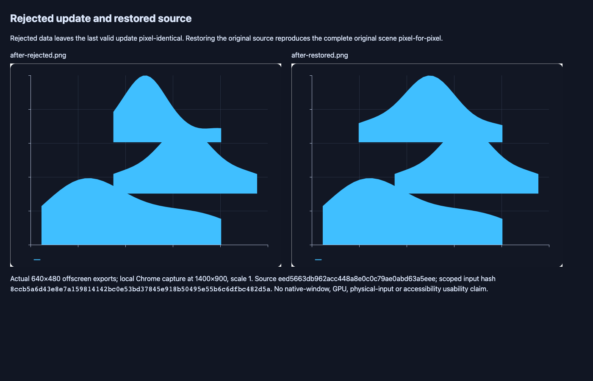

plot-ridgeline-followup · eed5663db962acc448a8e0c0c79ae0abd63a5eee · macOS-27.2.1-arm64-arm-64bit-Mach-O · Actual Mojo Scene/Canvas and Python exports; local headless Chrome · tests/fixtures/wave_b/ridgeline.json

Complete native density peak Action: Open native.html Expected: Before: nine samples exceed y_max=3. After: all 96 vertices fit y=[0, 3.3]. The 1.3-unit density rise and category spacing are preserved.
initial · browser · 1400 × 900 pixels

Native selection and update replay Action: Open interaction.html Expected: The native harness clicks a real glyph, replays keyboard/linked selection and updates the source table; category ordering and complete peaks remain.
interaction · browser · 1400 × 900 pixels

Complete Python export peak Action: Open python.html Expected: Python exports use the same corrected density domain. Sixteen group-count, constant-data and viewport regression cases now retain every sample.
result · browser · 1400 × 900 pixels

Pinned reference remains clipped Action: Open reference.html Expected: Genuine dataviz 0.8.0 output still clips the peak. All complete SVG density path vertices agree within 1.1 px under its original category frame; raster IoU is descriptive only.
result · browser · 1400 × 900 pixels

Rejected update and restored source Action: Open recovery.html Expected: Rejected data leaves the last valid update pixel-identical. Restoring the original source reproduces the complete original scene pixel-for-pixel.
recovery · browser · 1400 × 900 pixels
Contact sheetReproduce
See README.md.
Full sampled density peaks survive native and Python projection, interaction and recovery.
Screenshots show recorded states. They do not establish latency, scientific accuracy, physical IME, screen-reader behavior, or human usability.